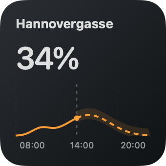
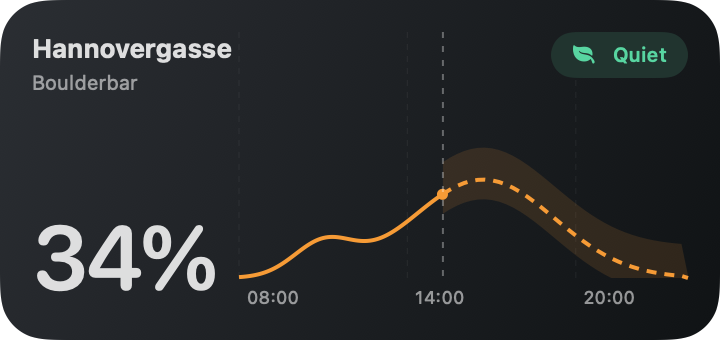
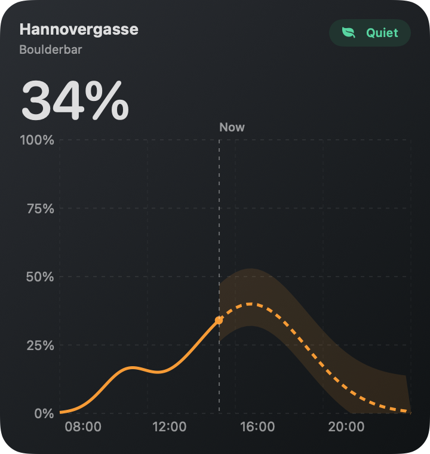
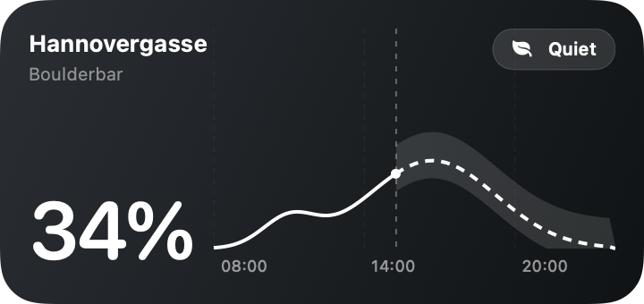

Rendered from the actual SwiftUI views. These are fixed sample readings, not live occupancy. No app installation is needed. System tinting and WidgetKit refresh behavior require host testing.



